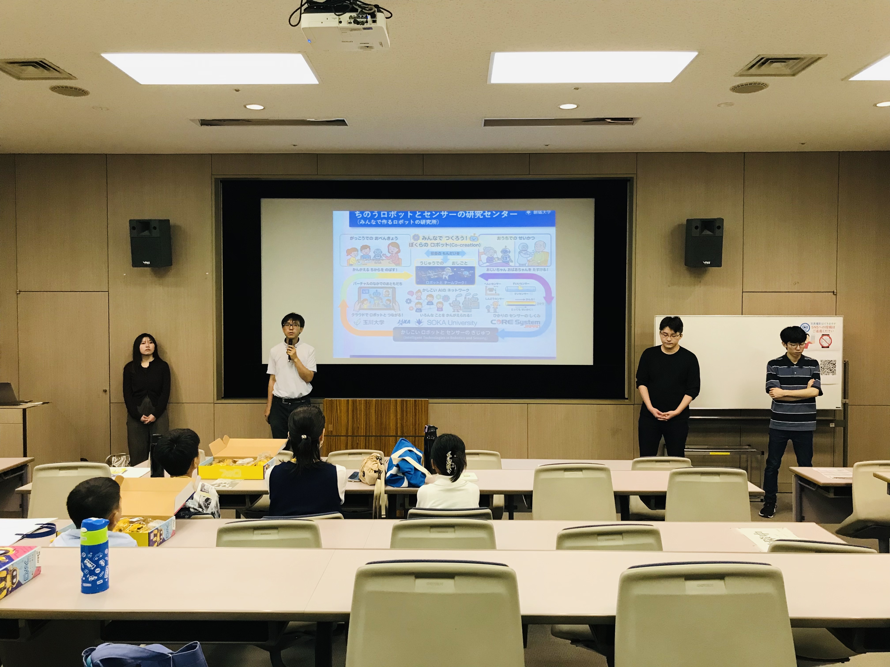
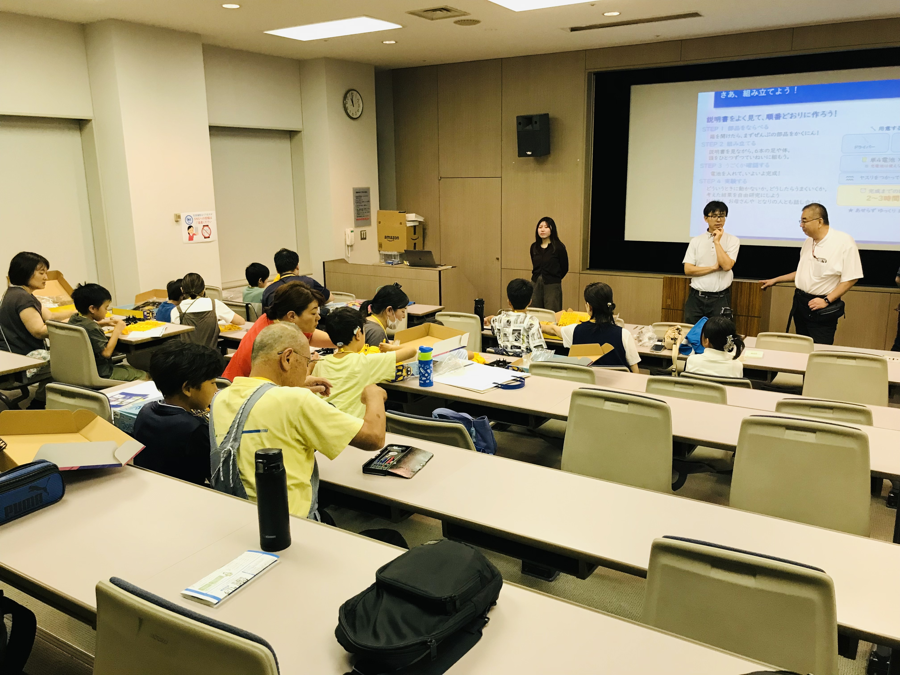
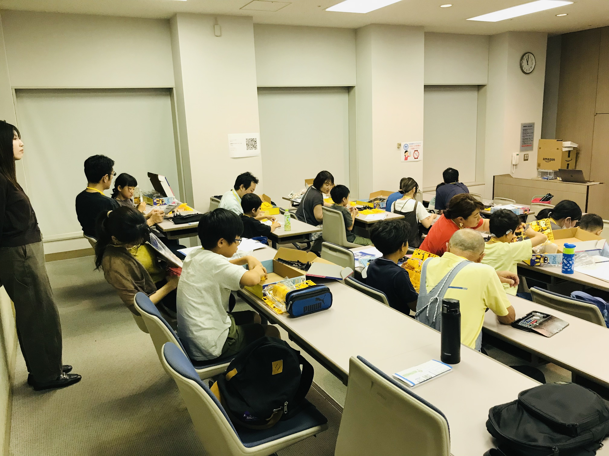
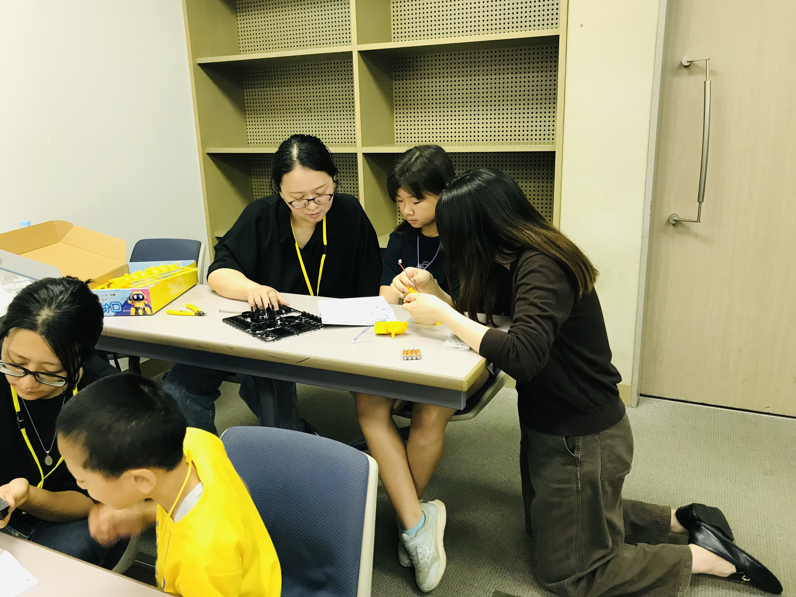
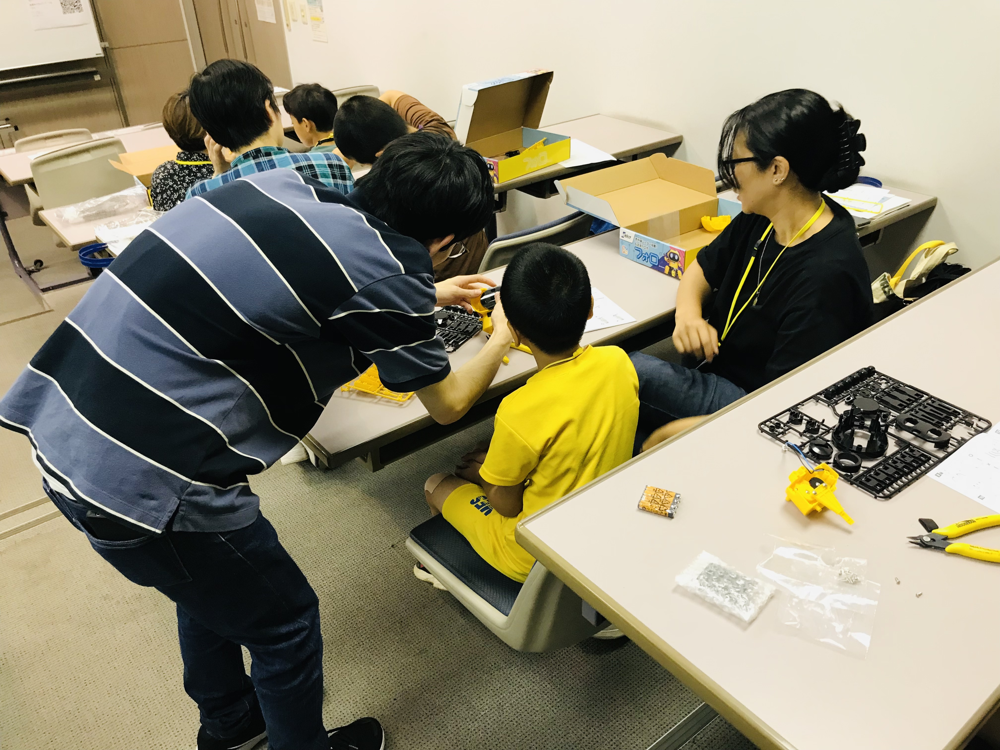
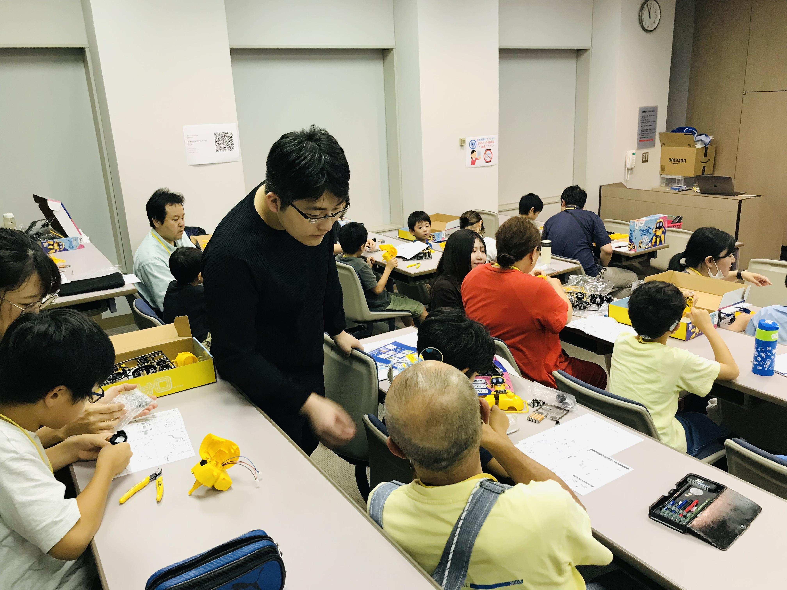
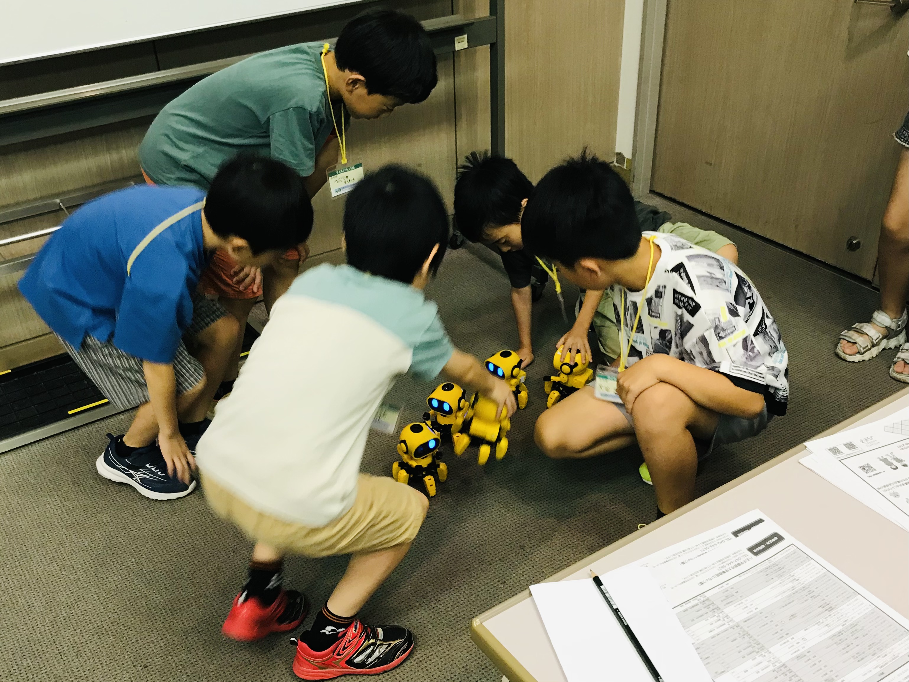
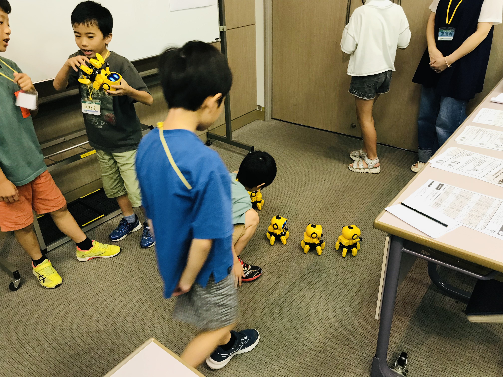

第16回子どもいちょう塾で
ロボット教室を開催しました
Robot Workshop for Kids
at the 16th Kodomo Icho-juku
作って遊ぼう！お散歩ロボット ～赤外線で追いかけるロボットを制作～
"Build & Play! A Strolling Robot" — building a robot that follows you using infrared sensing
申込開始からわずか1分で満席の人気講座
A workshop that filled up in just one minute
2026年7月18日（土）、八王子市のクリエイトホール（八王子市生涯学習センター）で開催された「第16回子どもいちょう塾」において、CIRoSセンター員の鈴木彰真（創価大学理工学部）が、小学生向け講座「作って遊ぼう！お散歩ロボット ～赤外線で追いかけるロボットを制作～」を開講しました。本講座は申込開始からわずか1分で定員が埋まった人気講座となりました。
On Saturday, July 18, 2026, CIRoS member Akimasa Suzuki (Faculty of Science and Engineering, Soka University) held a hands-on workshop for elementary school students, "Build & Play! A Strolling Robot," at the 16th Kodomo Icho-juku held at Create Hall (Hachioji Lifelong Learning Center). Registration for the workshop filled up just one minute after applications opened.
子どもいちょう塾とは
About Kodomo Icho-juku
子どもいちょう塾は、大学コンソーシアム八王子に加盟する大学・短大・高専の教員が、小学3～6年生を対象に各校の特色を生かした特別講座を届ける恒例イベントです。第16回となる今回は7月18日・19日の2日間にわたり、加盟校から21種類の講座が開講されました。
Kodomo Icho-juku is an annual outreach program in which faculty members of the universities, junior colleges, and colleges of technology belonging to the University Consortium Hachioji offer special courses for elementary school students in grades 3–6. In its 16th edition, 21 courses were offered over two days, July 18–19.
当日の様子
Workshop Highlights
講座の冒頭では、CIRoS（知能ロボティクス・センシング共創拠点）の研究内容を、子ども向けに構成したスライド「ちのうロボットとセンサーの研究センター ～みんなで作るロボットの研究所～」で紹介し、ロボットやセンサーの研究が私たちの暮らしとどうつながっているのかをやさしく解説しました。
The workshop opened with a kid-friendly introduction to CIRoS (Center for Co-creation in Intelligent Robotics and Sensing), explaining in simple terms how research on robots and sensors connects to our everyday lives.
その後はいよいよロボット製作です。子どもたちは、赤外線センサーで目の前のものを追いかける6足歩行ロボットの組み立てに挑戦しました。ニッパーで部品を切り出し、説明書を読み解きながら、保護者の方々や創価大学の学生スタッフのサポートを受けて、昼食休憩を挟みつつ一歩ずつ組み立てを進めました。
The main activity was building a six-legged walking robot that follows objects using infrared sensors. Working step by step — cutting parts from runners with nippers and carefully following the instructions — the children assembled their robots with support from their guardians and Soka University student staff.
完成したロボットを床に並べて動かすと、教室のあちこちで歓声が上がりました。手をかざすと追いかけてくるロボットの動きを観察しながら、「どういうときに動かないのか」「どうしたらうまく追いかけてくれるのか」を試行錯誤する姿は、まさに小さな研究者そのもの。夏休みの自由研究のヒントも持ち帰ってもらえたのではないでしょうか。
When the completed robots finally started walking, cheers erupted across the room. Observing how the robots chased their hands, the children experimented like little researchers — figuring out when the robots would not move and how to make them follow better.








おわりに
Looking Ahead
CIRoSは「産学・地域・学生との共創」を拠点活動の核に据えています。今回のような地域の子どもたちへのアウトリーチ活動を通じて、次世代を担う子どもたちに科学技術の面白さを伝える取り組みを今後も続けてまいります。ご参加いただいた皆さま、運営いただいた大学コンソーシアム八王子の皆さまに心より御礼申し上げます。
Co-creation with industry, the local community, and students is at the heart of CIRoS. We will continue outreach activities like this one to share the excitement of science and technology with the next generation. We sincerely thank all participants and the University Consortium Hachioji for making this event possible.